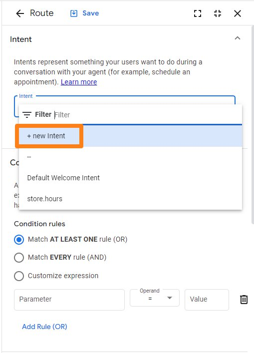
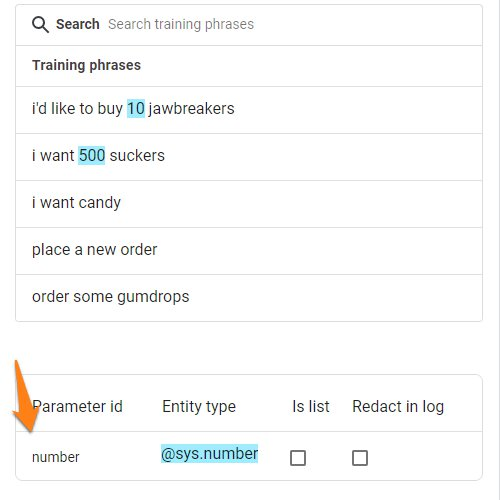
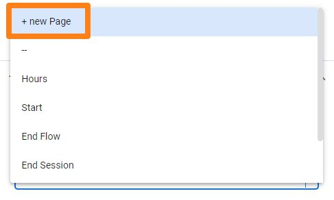
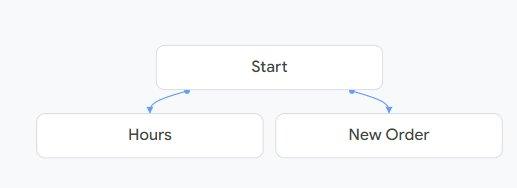
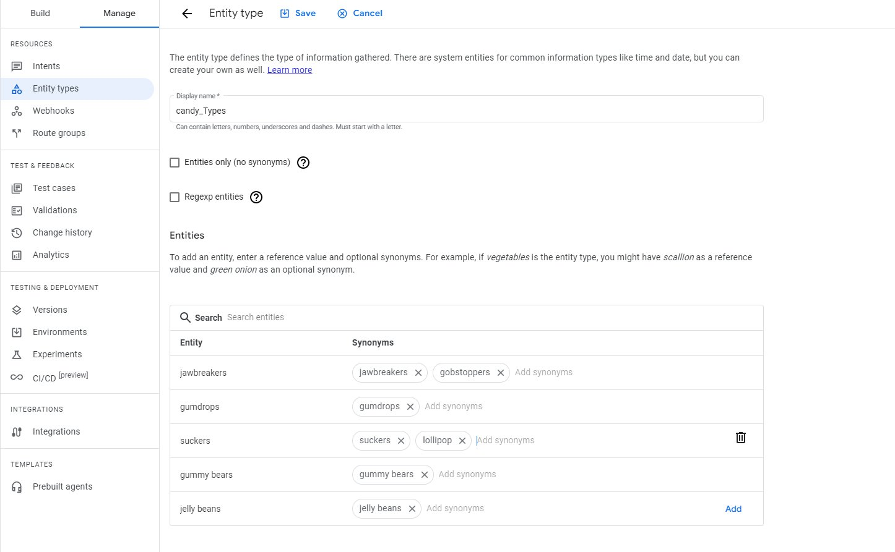
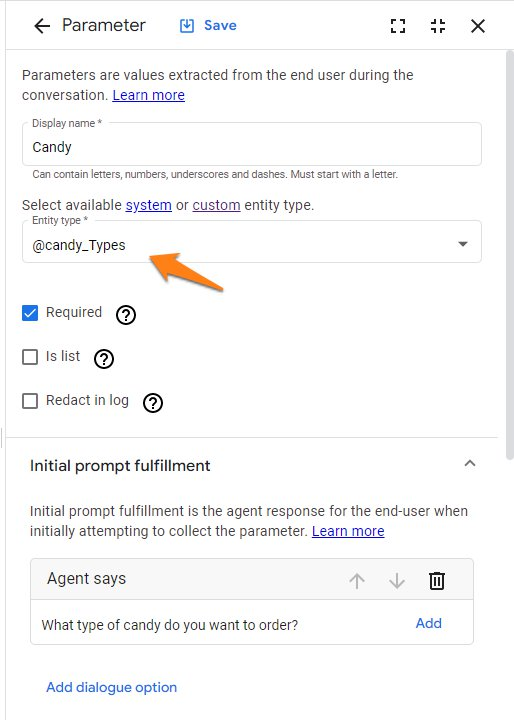
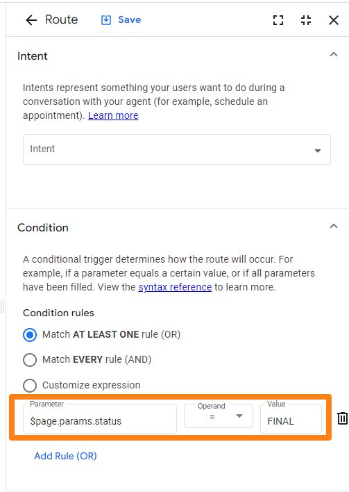
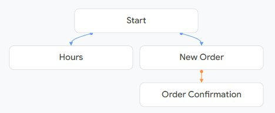
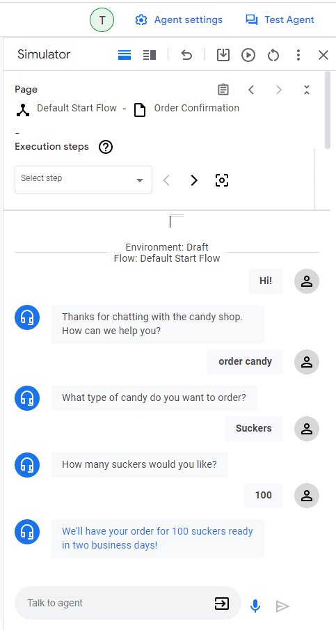

Building a DialogFlow CX Agent
Terminology
- Agents - Agent is DialogFlow’s term for bot. An agent is a natural language understanding module that understands the nuances of human language. You design and build a Dialogflow agent to handle the types of conversations required for your system.
- Flows - Used to define topics and the associated conversational paths. Here’s an example of different flows that might be built for a pizza delivery agent.

- Pages - Pages are configured to collect information from the end user that is relevant for the conversational state represented by the page. See the below example of different pages in blue that might be used for a Food Order flow.

- Entity Types and Parameters - If you are familiar with other bot engines, you might know the term slots and slot types. Entity types and parameters are essentially the same. Entity types control how data from end users can be inputted. With entity types, many come predefined such as Number Sequence. Entity types that come predefined are called system entities and entity types that you create are called custom entities. For example, you might create a custom entity type for pizza toppings that only accepts a predefined list of topppings. Parameters capture and reference values that have been supplied by the end user. Each parameter is assigned an entity type. For example, the parameter account number might have an entity type of number sequence.
- Forms - A form is built for each page and it is a list of parameters that should be collected from the end user for the page.
- Intents - An intent categorizes a users intention based on data called training phrases. Training phrases are example phrases of what end users might type or say that would match up to the intent.
- Fulfillment - Fulfillment enables the virtual agent to respond to the end users question, query for information, or terminate a session. It is possible to call mutiple fulfillments during one turn.
- State Handlers - Used to control the conversation by creating responses for end users and/or by transitioning the current page.
Reference page - https://cloud.google.com/dialogflow/cx/docs/basics
Building a DialogFlow CX Agent
Today we’re going to build a virtual agent for a candy shop. The candy shop is hoping to use DialogFlow CX to accomplish two items: 1. Allow customers to place orders & 2. Give out store hours. Let’s get to work! Try to follow along with either the steps below or watch the video at the bottom of this page.
- Navigate to the Google CCAI Console & ensure that you are in the project that you created in the previous section.
- If you receive this prompt when you navigate to the link, just enable the API.

- Create a new agent and give it a descriptive name like “Candy Shop Bot”
- The first task we will do is edit the Default Welcome Intent. Click on the start button in the middle of the page and then on Default Welcome Intent. Under fulfillment, let’s delete the default phrases and add our own; “Thanks for chatting with the candy shop. How can we help you?” Be sure to click save.

- Before we move to the next step, let’s go over the Test Agent tool. In the top right, click test agent. If you say hello, you should get back the response we just created!

Now we are going to create a couple of intents and pages. You can create intents two ways; either from the manage tab or inline. We’ll show you both ways. Pages can either be created from the build tab or inline. We will first create an intent using the manage tab and a page using the build tab.
- Select the manage tab > intents > create
- Name this intent store.hours
- Enter at least 5 training phrases. Here’s two examples.
- When is your store open?
- What are your hours?
- Be sure to press save after adding your training phrases
- Navigate back to the build tab and then click the + sign to create a new page named “Hours”
- Hover over the newly created Hours page and click the 3 dots and then Edit
- Edit the fulfillment field and then input some text describing your candy shops store hours. For example, “Our shop is open Monday through Saturday from 11am to 9pm.”
- Be sure to press save on both the fulfillment and the page.
- Navigate back to the Default Start Flow and then press the Start block
- Create a new route and choose store.hours from the intent drop down and under the transition section choose the Hours page.
- Now we are going to create an intent and a page using the inline functionality
- Click the start block under the Default Start Flow and then the + to add a new route
- In the intent drop down list click + new Intent, which will allow you to create a new intent directly from here

- Name your new intent “Order Candy” and add some training phrases of what a customer might say if they want to order candy. Under training phrases, add the following sentences
- order some gumdrops
- place a new order
- i want candy
- i want 500 suckers
- i’d like to buy 10 jawbreakers
- You should notice that a parameter is automatically created when putting in your training phrases. Google is recognizing based on your inputted training phrases that you are going to need to gather the quantity of candies as a parameter for this intent. We’ll get more into adding parameters here in just a little bit. 
- Name your new intent “Order Candy” and add some training phrases of what a customer might say if they want to order candy. Under training phrases, add the following sentences
- While still editing the route, navigate down to the transition section and now let’s create a new page using inline functionality.

- name this page “New Order” and then save your route
- Quick check in - at this point, your graphical editor should look like this. 
Next we need to add parameters to our New Order page. As mentioned in the terminology sections, parameters must be of an entity type. There are both system entities which come preloaded and then you can create custom entities for custom types of data. In our scenario, we will gather the type of candy they want to order (custom entity) and the quantity of that candy that they want to order.
- First let’s create the new custom entity type for the type of candy. Our store sells 5 different types of candies: jawbreakers, gumdrops, suckers, gummy bears, and jelly beans.
- Navigate to the manage tab > entity types > and then create a new custom entity type named candy_Types. Under the entities section on this page, add our 5 candy types listed above and any corresponding synonyms you can think of. Be sure to press save. 
- Now that we have our custom entity type, we can add our parameters to our New Order page.
- Navigate back to Build and then click on the New Order page in the graphical builder.
- Click the + to create a new parameter.
- Name the parameter “Candy” and in the entity type drop down find the custom entity type we just created. Lastly, in the Initial prompt fulfillment section, type “What type of candy do you want to order?” After that, press save. 
- Click the + again to create another parameter. This time, we’ll gather the amount they want to order.
- For display name, type Quantity and for entity type choose @sys.number.
- For the Initial prompt fulfillment, type “How many $session.params.Candy would you like?”
- The $session.params.Candy variable will plug in the previously entered Candy type that they gave us, for example “How many suckers would you like?” Lastly, we will create an order confirmation page and transition to that page using a condition that checks if all the New Order parameters are filled in.
- First create a new page and name it Order Confirmation.
- Click on the page and add entry fulfillment that says “We’ll have your order for $session.params.Quantity $session.params.Candy ready in two business days!”
- Navigate back to the Default Start Flow graphical interface and click on the New Order page.
- Click the + to add a new route.
- Add a condition to check if $page.params.status = FINAL and then transition to the Order Confirmation page if this evaluates to true. Be sure to save the route.  There you go! Your graphical interface should now look like this.  We also can use the test agent tool. Go through this conversation with the bot. 
If your conversation worked, congrats! You’ve just created a candy shop bot.